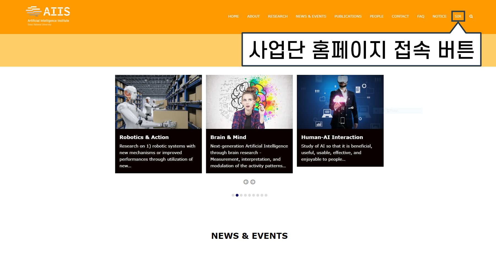
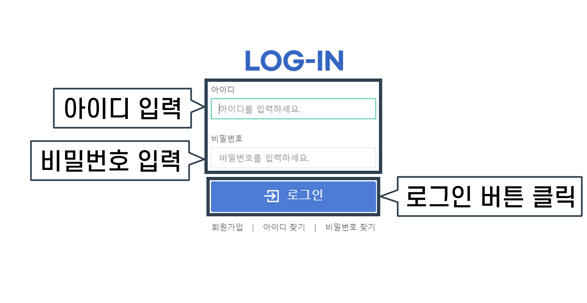

프로젝트 참여 방법
1. https://aiis.snu.ac.kr/ 로 접속합니다.
2. 아래 사진에 표시된 버튼(항목이름: ‘SIR’)을 클릭하여 사업단 홈페이지에 접속합니다.
3. 사업단 홈페이지 접속 후 '데이터 구축 프로그램 바로가기' 버튼을 클릭합니다.

4. 프로젝트 홈페이지에서 ‘아이디’와 ‘비밀번호’를 입력하고 로그인을 합니다.
5-1. 라벨러는 ‘라벨링’ 버튼을 클릭하여 프로젝트에 참여합니다.
5-2. 검수자는 ‘검수’ 버튼을 클릭하여 프로젝트에 참여합니다.

6. ‘작업 할당받기’ 버튼을 클릭합니다.
* 라벨러 참고 이미지

* 검수자 참고 이미지

7. 아래 사진과 같은 팝업창이 뜨면 파란색으로 표시된 버튼을 클릭합니다.
* 라벨러 참고 이미지

* 검수자 참고 이미지

8. ‘할당 받으시겠습니까?’ 라는 팝업창이 뜨면 ‘확인’ 버튼을 클릭합니다.
* 라벨러 참고 이미지

* 검수자 참고 이미지

9. 아래 사진과 같이 할당 받았다는 팝업이 뜨면 ‘확인’ 버튼을 클릭합니다.
* 라벨러 참고 이미지

* 검수자 참고 이미지

10. 할당이 완료되면 다음과 같이 할당받은 작업 목록이 생성되고, 파란 글씨로 쓰여 있는 파일명을 클릭하여 작업을 시작할 수 있습니다.
(자세한 작업 방법은 ‘라벨링 작업 방법 안내’ 및 ‘검수 작업 방법 안내’ 를 참고하세요.)
* 라벨러 참고 이미지

* 검수자 참고 이미지